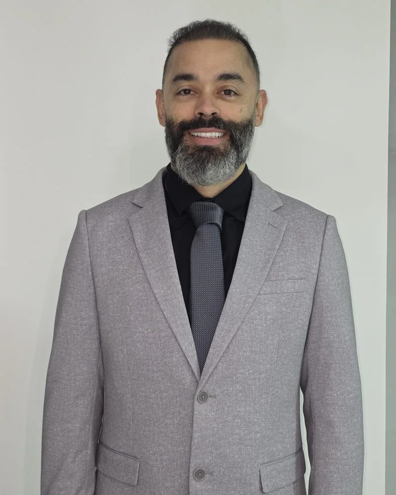
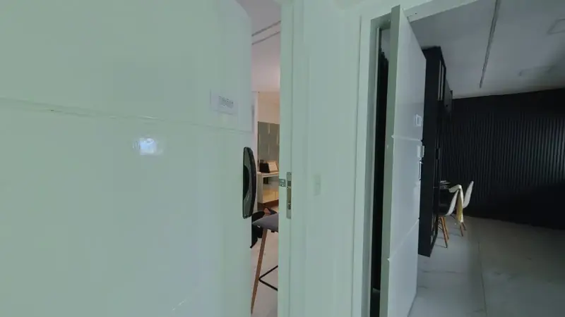
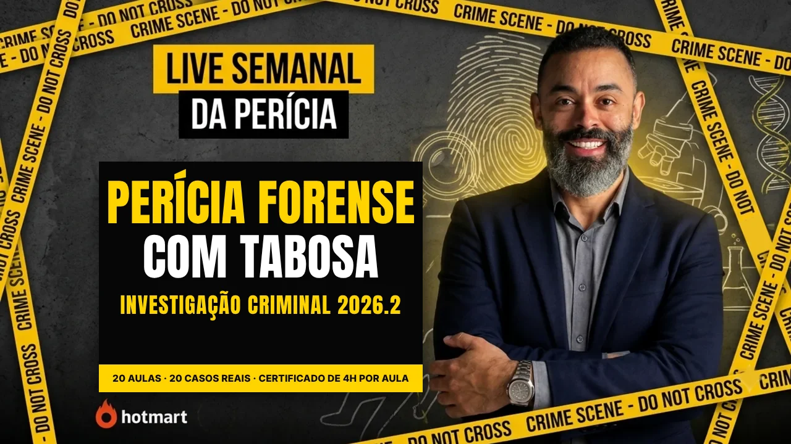

🔎 PERÍCIA CRIMINAL REALPerito criminal há 17 anos, com mais de 1.800 locais de crime atendidos. Aqui você joga, estuda e veste a perícia: o jogo Cena de Crime 360, o curso com 20 casos reais e a Loja CSI.
O primeiro jogo de investigação em 360° feito por um perito criminal. Um apartamento real, um médico morto e você no papel do perito.

Entre no apartamento, fotografe e colete os vestígios, veja as câmeras e os registros da fechadura, ouça o porteiro e o síndico, peça os exames e assine o laudo com o seu nome.
Aprenda perícia criminal pelos casos que o Brasil inteiro acompanhou. Em cada aula, primeiro o caso; depois, a técnica que a perícia usou na cena.

Isabella Nardoni, Boate Kiss, Elize Matsunaga, Marielle, Richthofen, Maníaco do Parque e mais: isolamento de local, manchas de sangue, luminol, impressões digitais, medicina legal, exumação.
Camisas, calça, acessórios e os dois romances forenses do Henrique. Pix, cartão em até 12x ou boleto, com envio para todo o Brasil.
11 estampas de camisa (normal e babylook, 100% algodão), calça CSI, brincos, carteiras, cordão, estojo de evidências, bottons e os livros O Caso do Marchante Suicida e Os Canibais de Pernambuco.
Um caso real brasileiro e a técnica pericial por trás dele, ao vivo no YouTube, no Instagram e no TikTok. Quem participa emite o certificado de 2 horas de graça na noite da live.
Sou perito criminal há 17 anos. Nesse tempo atendi mais de 1.800 locais de crime: mortes violentas, incêndios, acidentes, locais de furto e roubo, exames em veículos e muito laudo escrito de madrugada.
Sempre me perguntaram como é chegar numa cena e saber por onde começar. Foi dessa pergunta que nasceu tudo o que está neste site: a live de quarta, em que pego um caso real brasileiro e mostro o que a perícia fez e o que deveria ter feito; o curso, que junta as 20 aulas com os materiais; o jogo Cena de Crime 360, em que você entra num apartamento de verdade e assina o laudo; e a Loja CSI, para quem gosta de vestir a perícia.
Também escrevi dois romances forenses, O Caso do Marchante Suicida e Os Canibais de Pernambuco, com a técnica de verdade por trás de cada capítulo. Os cursos e a live são para estudantes, quem vai prestar concurso na área policial, profissionais de saúde, direito e segurança, e para quem gosta de casos reais e quer entender como a perícia trabalha no dia a dia.
Aviso: as aulas são cursos livres e não dão habilitação profissional. O jogo é uma obra de ficção feita com técnica real.